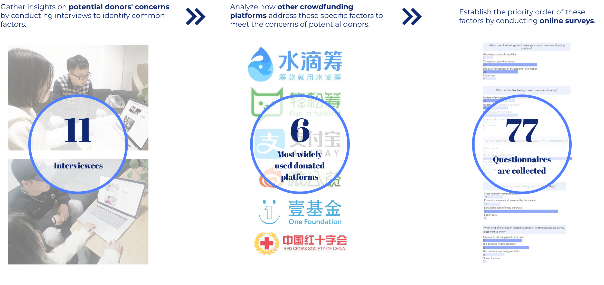
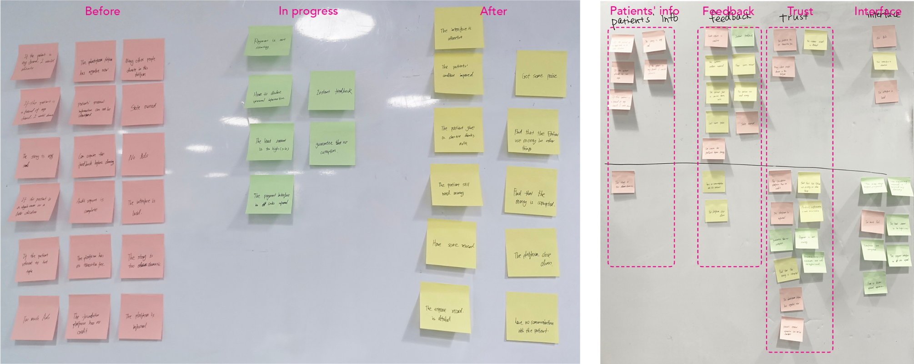
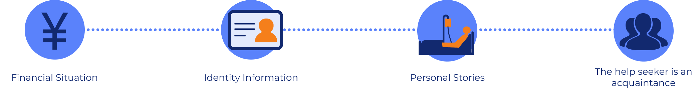
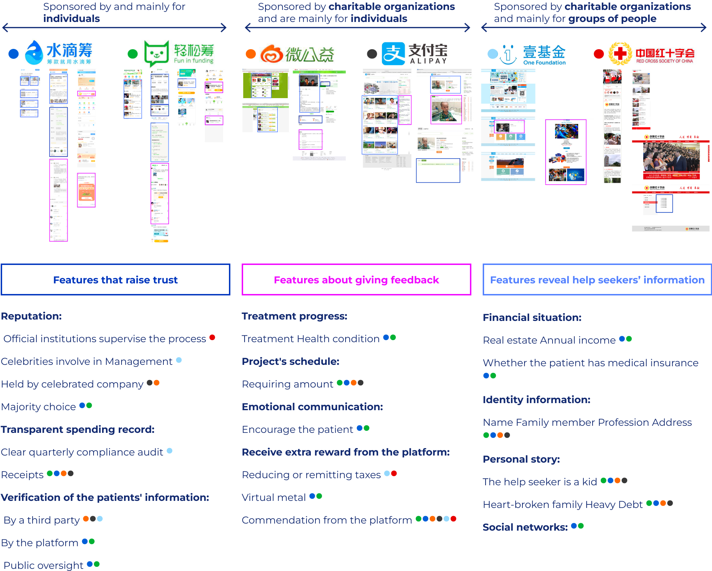
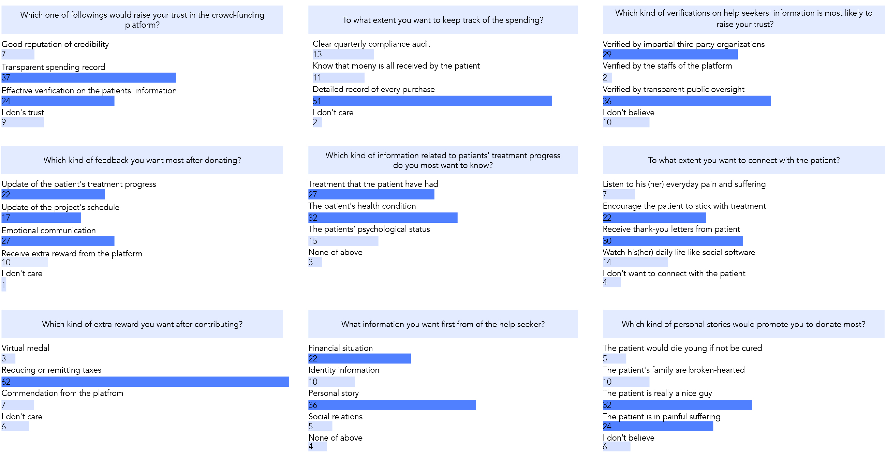
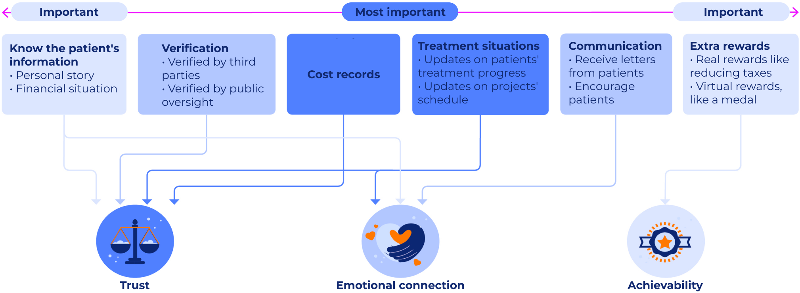

Research Process

User Interviews
We conducted interviews with 11 individuals to gather their perspectives on online crowdfunding platforms dedicated to raising funds for major medical expenses.
To gather comprehensive feedback, we posed 9 open-ended questions to the interviewees, enabling us to capture a wide range of perspectives. Subsequently, we categorized the feedback into 4 distinct groups.
Before: Decision making
- What factor(s) would make you intend to donate?
- What factor(s) would make you not want to donate?
- What factor(s) would make you want to donate more?
In progress: Donating
- What factor(s) would let you give up donating?
- What factor(s) would make you feel good?
- What factor(s) would make you feel bad?
After: Receive feedback
- What factor(s) would make you donate again?
- What factor(s) would make you feel good?
- What factor(s) would make you feel bad?

Interview Insights
1. Trust before donating is the most important factor.
The biggest pain point of contributing money on donation platforms is that most donors do not trust platforms. It is a determinant of whether they would donate or not.
2. Proper feedback after donating would encourage more contributions.
All the interviewees mentioned that they want to receive proper feedback after donating:
Has the situation of the help seeker improved? Can I receive some extra reward like some real privilege or virtual medal?
Would the patients give me a thank-you note? The interviewees also show a positive attitude to do the next donation if proper feedbacks are available.
3. Disclosure of patients' information would promote donating.
More than five interviewees said disclosing patients' information would augment the authenticity of help seekers' stories and also raise donors' sympathy.
Thus the interviewees prefer to donate to help seekers who provide more comprehensive personal information.

4. The design of interfaces could also affect users' feelings towards the authority of the platforms.
Specify how other platforms meet the factors that users concern about.
To acquire more detailed information, we researched the 6 most well-known Chinese donation platforms.
We analyzed their features of raising trust, providing feedback,
and exposing patients' personal information according to the above-mentioned interview insights.

Questionnaires
We designed a questionnaire to figure out the hierarchy of those factors in raising people's likelihood of donating.
77 questionnaires are collected and the statistics are shown below.

Conclusion: Factors that would affect people's likelihood of donating
According to the user research, we concluded the 6 most important factors would affect people's likelihood of donating.
From the perspective of the psychological states of the donors, we found the 6 factors can be classified into 3 categories：
trust, emotional connection, and sense of achievability
